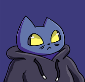
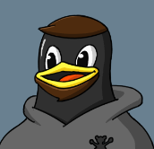
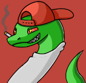
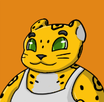
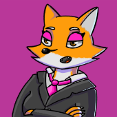

Selecione um personagem
- 
- 
- 
- 
- 
Nico
Um adolescente preguiçoso e perdido com a vida. Tem um grande potencial, mas não sabe que profissão seguir e acaba jogando o dia fora em redes sociais.
Um adolescente preguiçoso e perdido com a vida. Tem um grande potencial, mas não sabe que profissão seguir e acaba jogando o dia fora em redes sociais.
Nico é um gato jovem adulto de 17-18 anos, inseguro, que ainda está incerto em relação as suas decisões pessoais quanto profissionais. Juninho, o professor, dará conselhos ao gatinho, Nico, quando ainda estiver na escola. Nico não sabe muito bem o que quer fazer. O objetivo é que Nico seja contratado, mas para isso, ele precisa passar por fases importantes que o levarão a construção da sua identidade: autoconhecimento, emancipação e autonomia. Mas ele encontrará desafios durante sua caminhada e precisará enfrentá-los usando seus conhecimentos.
Nico está se formando na escola, porém não sabe em qual carreira seguir, ele se sente inseguro sobre suas capacidades técnicas e de liderança, toda essa pressão faz com que ele acabe ficando preguiçoso e procrastine o dia inteiro. Para então descobrir o que gostaria de trabalhar, ele conversa com seu orientador Junin, que lhe mostra algumas possibilidades de carreiras a seguir. Após decidir qual área do conhecimento gostaria de seguir, nosso jovem então começa o seu último ano de ensino médio, porém, alguns de seus amigos se sentem incomodados com seu desenvolvimento. Ao longo do tempo, juntamente aos ensinamentos de seu orientador, o gato guerreiro começa a descobrir seus talentos e habilidades, e com isso seus “amigos”” (Sivirino, uma serpente e Otto, uma onça) passam a tentar sabotá-lo utilizando de contratos que atrasariam seu desenvolvimento. Após superar todas as armadilhas e enganações, Nick se forma no ensino Médio, até que em uma última tentativa de impedi-lo, Otto e Sivirino vão confrontá-lo diretamente. Após falharem miseravelmente, Nico consegue seu primeiro emprego.
Nosso protagonista recebe uma proposta de emprego em outra cidade para trabalhar na prefeitura. Após algumas semanas em seu trabalho, o pequeno felino percebe que suas condições de trabalho não são lá as melhores. E decide investigar o que está ocorrendo por detrás dos lençóis. Nisso ele descobre que a prefeita, Roberta (uma raposa), não cumpre com as propostas que fez para ser eleita, e não cumpre com o direito dos trabalhadores, que trabalham para manter a imagem da prefeita, mas não conseguem se desvincular daquele emprego. Após libertar aquelas pessoas e a si próprio, Roberta fica furiosa e manda pessoas o prenderem. Nisso, Nico foge desesperadamente até enfim sair da cidade. Após isso, agora ele está buscando um emprego melhor, com condições mais humanas.
Após um tempo, Nico passa a trabalhar em uma multinacional. Ele foi se desenvolvendo como profissional e subindo de cargos na empresa. Nico recebe uma proposta do seu chefe para substituir o gerente de sua equipe, já que ele não estava conseguindo se organizar e alcançar os objetivos exigidos pela empresa. O gerente antigo, por ter 5 filhos para sustentar, começa a sentir seu cargo ameaçado e começa a pensar formas de continuar no emprego. Para isso ele tenta de todas as formas mostrar ser superior, mas falha ao não conseguir gerenciar suas próprias tarefas, decisões e obrigações. Nisso os dois acabam se enfrentando. Porém, Nico mais uma vez se mostra mais preparado, e acaba o superando. Após toda a sua jornada, Nico conseguiu desenvolver suas habilidades e teve sucesso em sua carreira.